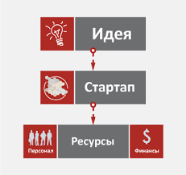

Старта́п (от англ. startup company, startup, букв. — «стартующий») — компания с короткой историей операционной деятельности. Термин впервые использован в журнале Forbes в августе 1976 года и Business Week в сентябре 1977 года. Понятие закрепилось в языке в 1990-е годы и получило широкое распространение во время возникновения экономического пузыря доткомов.
Стартап — это коммерческий проект, основанный на какой-либо идее и требующий финансирования для развития. В стартапы инвестируют прежде всего венчурные фонды. Это является крайне рискованным делом: указывается, что лишь 1% стартапов достигает больших объемов продаж и приносит инвесторам высокий возврат инвестиций. Создатели стартапа либо продают свои доли в успешном стартапе, либо сохраняют их для получения стабильного пассивного дохода (при этом у создателя стартапа часто остается менее 10% капитала компании).
